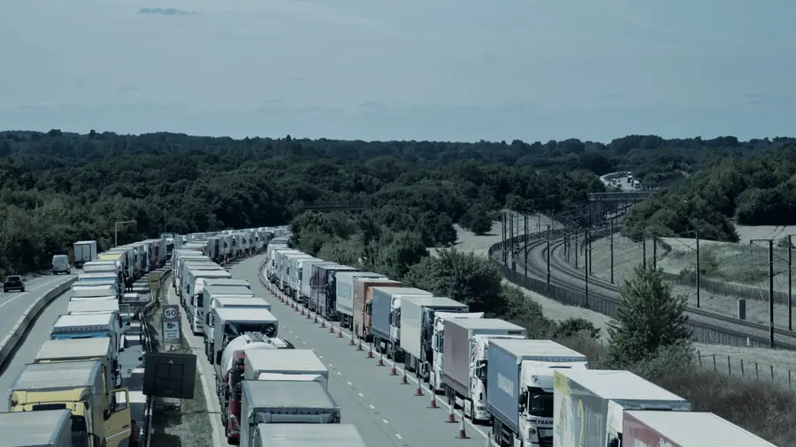
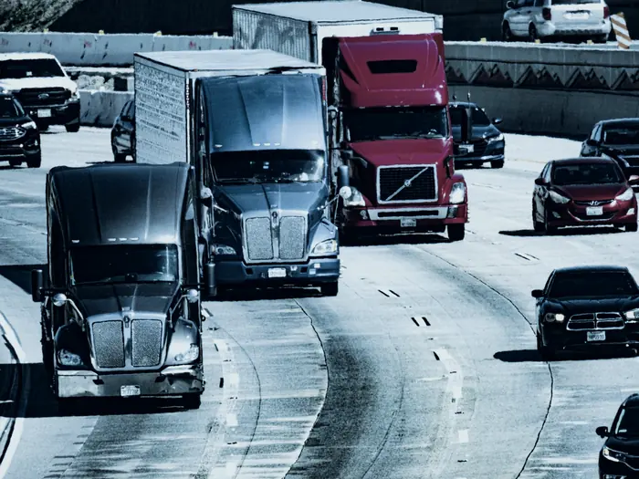
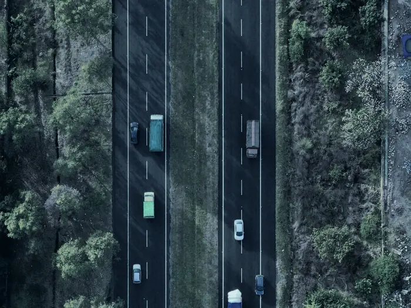

Combustible y kilómetros
Recorrido real contra recorrido previsto. Los desvíos y los kilómetros de más dejan de ser invisibles en la factura del mes.
Buenos Aires y Córdoba
Rastreo y seguimiento en tiempo real para flotas, maquinaria pesada, transporte público, activos móviles y personas. Equipos instalados, plataforma propia y soporte técnico de este lado del teléfono.
Representación del panel · datos ilustrativos
El punto
Combustible, horas extras, desvíos y tiempos muertos no aparecen en ninguna planilla hasta que alguien los mide. Un localizador GPS convierte esa zona gris en información concreta.

Recorrido real contra recorrido previsto. Los desvíos y los kilómetros de más dejan de ser invisibles en la factura del mes.
Cuánto tarda cada trabajo y cuánto tiempo estuvo la unidad detenida sin operar. Dos números que rara vez alguien tiene.
La jornada de cada unidad queda registrada. Se factura y se paga lo que efectivamente se trabajó.
El comportamiento al volante impacta directo en el mantenimiento, en la vida útil del vehículo y en el costo por kilómetro.
Soluciones
No es el mismo equipo el que va en un camión de larga distancia que el que se esconde dentro de una carga. Por eso la solución se arma a medida de lo que hay que controlar.

01La operación completa en un mapa a pantalla completa, para saber en cada instante qué pasa con cada vehículo y ajustar sobre la marcha.
Un sistema de acceso público, didáctico e intuitivo: la empresa gana control del servicio y el pasajero deja de esperar a ciegas.

03Rastreadores compactos con batería de larga duración para todo lo que se mueve sin conductor fijo: maquinaria, cargas, motos y equipaje.
 04
04
El rastreador más chico del mercado, con batería incorporada. Pensado para personal que trabaja solo, fuera de la oficina o de noche.
Cómo trabajamos
Sucursales en Buenos Aires y en Córdoba, y un 0800 gratuito para todo el país. Lo que cambia de un cliente a otro es el equipo que se instala, no la forma de mirarlo.
La plataforma
Cada cliente entra con su usuario y ve únicamente sus unidades. Sin llamar a nadie, sin pedir un reporte, sin esperar al lunes.
Toda la operación en una sola vista, actualizada al instante. La gestión se hace mirando, no llamando.
Las entradas y salidas del equipo reportan información del vehículo, no solamente la posición en el mapa.
El dispositivo envía la alerta solo ante una eventualidad, y la persona también puede dispararla con un botón.
Si una unidad o una persona queda demasiado tiempo sin moverse, la plataforma lo informa.
Cada cliente entra con su clave y ve únicamente sus unidades, desde cualquier navegador y sin instalar nada.
Representación del panel · datos ilustrativos
Cómo se pone en marcha
Cuatro pasos, sin vueltas y sin sorpresas en el medio.
Cuántas unidades son, qué tipo de vehículo o activo hay que equipar y qué necesitás controlar. De ahí sale la cotización, no de una lista de precios genérica.
Colocamos el localizador GPS en cada unidad. En activos móviles el equipo es compacto, tiene batería propia y puede ir de forma temporal.
Te entregamos usuario y clave. Desde ese momento ves tus unidades en el mapa desde cualquier navegador, en tiempo real.
Quedás con línea directa: el 0800, WhatsApp y una casilla técnica exclusiva para lo que aparezca después de la instalación.
Preguntas frecuentes
Sí. El sistema está orientado a control de flotas de vehículos, maquinaria pesada y transporte público, y también se aplica a motos, utilitarios y activos que no tienen conductor fijo.
Desde la plataforma web, con tu usuario y tu clave. Se entra por navegador, desde una computadora o desde el celular, sin instalar programas.
Para eso están los rastreadores con batería de larga duración. Combinados con sensores de movimiento, pueden funcionar semanas sin recargarse ni conectarse a otra fuente de energía.
Sí. Es el rastreador más chico del mercado, más chico que un celular y con batería incorporada. Se usa para personal que trabaja solo o fuera de la oficina, para mascotas y como señuelo dentro de la carga.
Sí. Trabajamos con sucursales en Buenos Aires y en Córdoba, y hay un 0800 gratuito para todo el país. Desde el exterior se atiende al 0054 11 5294-8303.
Depende de la cantidad de unidades y del tipo de equipo que necesite cada una. Escribinos por WhatsApp o dejanos los datos en el formulario y te pasamos la cotización armada para tu caso.
Pedí tu cotización
Dejanos los datos y te armamos la cotización según la cantidad de unidades y el tipo de equipo. Si preferís hablar, el 0800 es gratuito desde todo el país.
Canales directos